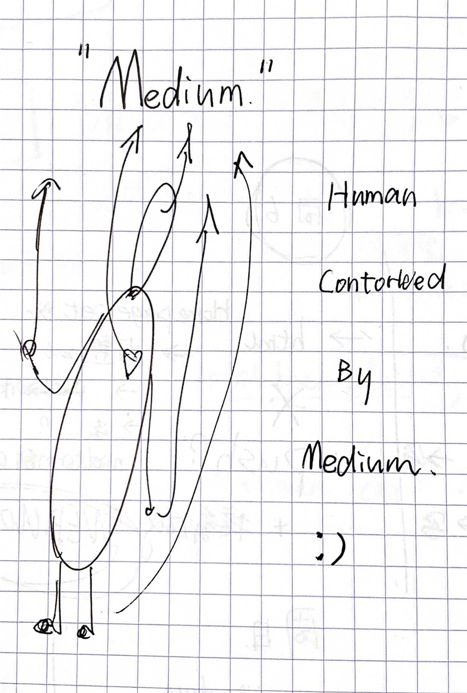

The Medium Is The MASSAGE
Marshell McLuhan?
➡️“GLOABAL VILLAGE” ➡️“MASSAGE”
Medium > Message?

Message(Information) < Medium SPREADING
Every change of Medium will trigger the alteration of the way of human seeing, thinking, living...
This article points out a critical point from the fact that the proportion of media and information content has become unbalanced in modern times. The media is no longer just a carrier of information, but has the momentum to replace it. The media penetrates into people's lives, perceives, and even shapes all the human knowledge frameworks. In the process of information dissemination, the more extensive it means that the content of the information is less and less important. Each evolution of media, such as books to screens, has upended the way humans see the world and changed the course of civilization.
In addition, in terms of this "The Medium Is The MASSAGE" sentence, this illustrates the relationship between the two.
This reminds me of another philosophical example: "It's not that we use language to express, but language is expressing us." Language (information) is not a tool for expressing thinking, but thinking is shaped by language. This may be a chicken or egg problem.

love the format